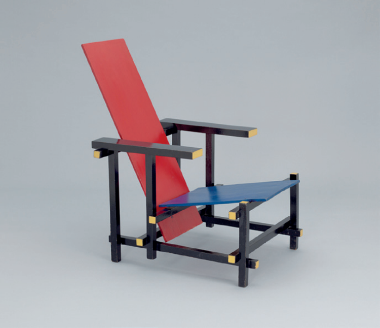

Cadeira Red/Blue, 1918 - 1923. Gerrit Thomas Rietveld.
Disponível em: https://www.moma.org/collection/works/4044?
artist_id=4922&locale=en&page=1&sov_referrer=artist.
Acesso em: 20 jul. 2018 (adaptado).
Considerando a imagem apresentada e o
movimento artístico do qual a obra retratada é
representativa, avalie as afirmações a seguir.
-
O estilo geométrico abstrato da obra
de Gerrit Rietveld é representativo do
Neoplasticismo, movimento que buscava
leis universais de equilíbrio e harmonia para
a arte.
-
As pinturas de Piet Mondrian foram a
principal fonte para o desenvolvimento
da filosofia e das formas visuais do
movimento de que a obra acima retratada é
representativo.
-
Os artistas do movimento ao qual pertence
a obra retratada buscavam alcançar a
harmonia universal da natureza por meio da
inclusão de linhas curvas e diagonais.
-
O repertório visual do grupo de artistas a
que Gerrit Rietveld pertencia foi reduzido
ao uso de cores primárias, cores neutras,
planos chapados quadrados, retangulares e
circulares e o uso frequente da simetria.
É correto o que se afirma em
-
I e II, apenas.
-
I e IV, apenas.
-
II e III, apenas.
-
III e IV, apenas.
-
I, II, III e IV.